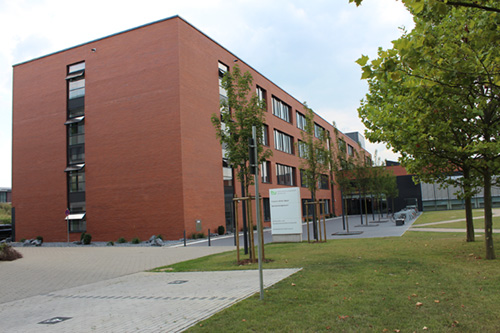

Wir begrüßen Sie am 23.09.2023 zur Fachtagung
„Mathe für alle“
in Dortmund.

„Mathe für alle“
in Dortmund.
Auch in diesem Jahr bietet Ihnen die Fachtagung „Mathe für alle“ ein spannendes und abwechslungsreiches Programm mit praxisnahen Themen zur Gestaltung und Reflexion des Mathematikunterrichts.
Weitere Informationen zum Programm folgen in Kürze.
Weitere Informationen zur Anmeldung folgen in Kürze.
TU Dortmund (Campus Nord)
Seminarraumgebäude 1 (SRG 1)
Friedrich-Wöhler- Weg 6
44227 Dortmund
Von Düsseldorf, Essen, Bochum und Dortmund Hbf aus erreichen Sie die Universität mit der S-Bahn S1 über die Haltestelle "Dortmund Universität". Hier geht es direkt zu den Seiten des Verkehrsverbund Rhein-Ruhr und der Deutschen Bahn.
Den Campus Nord der TU Dortmund erreichen Sie über die B1 / A40 an der Ausfahrt "Dortmund Dorstfeld", oder über die A45 an der Ausfahrt "Dortmund Eichlinghofen", nahe dem Autobahnkreuz "Dortmund West". An beiden Ausfahrten ist die Universität ausgeschildert.
In der Nähe des Seminarraumgebäudes stehen genügend kostenfreie Parkplätze zur Verfügung.
Sehr geehrte Tagungsinteressierte,
sehr geehrter Tagungsinteressierter,
am 23. September 2023 findet die Fachtagung „Mathe für alle“ statt. Zur Vorbereitung haben wir schon jetzt für Sie eine FAQ-Liste zusammengestellt. Diese soll nach Möglichkeit alle aufkommenden Fragen im Vorfeld klären. Wir werden sie mit dem Fortschreiten der Vorbereitungen aktualisieren.
Bitte haben Sie Verständnis dafür, dass wir bei 500 Teilnehmerinnen und Teilnehmern nicht alle aufkommenden Fragen einzeln beantworten können und dass wir daher auf E-Mail Anfragen, die in diesem FAQ behandelt und beantwortet werden, nicht antworten können.
Wir wünschen Ihnen bis zum Tagungstag eine ertragreiche Zeit in Schule und Hochschule und freuen uns mit Ihnen zusammen auf den 23. September.
Die Fachtagung „Mathe für alle“ bietet allen Interessierten die Teilnahme an Workshops und Vorträgen zur Mathematikdidaktik mit dem Schwerpunkt Sekundarstufe I und II. Die Themenschwerpunkte der Tagung orientieren sich an zentralen und aktuellen Herausforderungen im und für den Mathematikunterricht. Alle Teilnehmerinnen und Teilnehmer werden aktiv mitarbeiten und viele schöne Ideen und Materialien für den eigenen Unterricht mitnehmen können.
Wir halten uns bei der Teilnahmeberechtigung an das Tagungsthema: Mathe für tatsächlich alle. Wir freuen uns auf alle, die sich für Mathematikunterricht interessieren, vom Matheinteressierten zum Matheprof(i)!